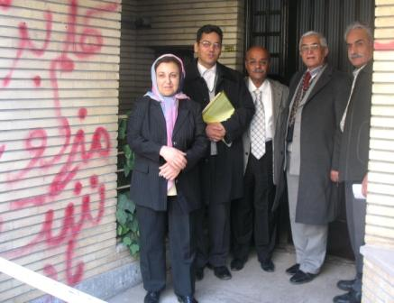
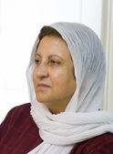

|
|
|
Browsing
Contact Us |
Campaigners |
Face to Face |
Tribune |
Interview |
News |
On the Web |
One Million |
Report
Farsi | Français | German | Italian | Spanish | العربية Also in this section
|
Campaign to Defend the Defenders of Human Rights Center LaunchedWednesday 24 December 2008 Change for Equality: A Campaign to defend the Defenders of Human Rights Center, a human rights NGO headed by Shirin Ebadi, was launched on Friday January 23, 2009. This Center was raided and closed by authorities on December 21, 2009. Some of the members of this Campaign visited with Shirin Ebadi and other lawyers and members of the Center, including Abdolfatah Soltani, Nargess Mohammadi, Dr. Ismailzadeh, and Mohammad Seifzadeh.
 In this meeting the activists starting the Campaign in defense of the Center, stressed the importance of immunity for human rights lawyers in relation to their human rights activities. These activists, who are largely involved in the women’s movement, also explained in this meeting that they were upset by the closure of the Center and the treatment and those working with the Center, mainly Shirin Ebadi, who has had her office searched and property seized and her home vandalized by a mob, have received in recent weeks. Also, Jinus Sobhani the administrative assistant working with the Center was arrested on January 14, 2009.
Shirin Ebadi and other lawyers and activists working with the Center welcomed the decision to set up a Campaign in defense of the Center and expressed their gratitude to members of the women’s movement who have provided much support in this difficult time. Shirin Ebadi explained: "The demands of the Iranian feminist movement is supported by Iranian women and Iranian men alike. This movement is the strongest movement in Iran, as well as in the Middle East. There is no other movement as broad as the Iranian women’s movement, with as much impact in the region. The path which the women’s movement has ventured upon, through collective action, has transformed into a model for others working in the region as well. In my trips around the world, I am often asked about the One Million Signatures Campaign, and this [attention to the Campaign] is yet another accomplishment of which we as Iranians can be proud." As a first step in their activities in support of the Defenders of Human Rights Center, the members of this Campaign intend to start a blog. THE OBSERVATORY FOR THE PROTECTION OF HUMAN RIGHTS DEFENDERS PRESS RELEASE IRAN: Arrest of Ms. Jinus Sobhani, a member of the Defenders of Human Rights Centre Paris-Geneva, January 15, 2009. The Observatory for the Protection of Human Rights Defenders, a joint programme of the International Federation for Human Rights and the World Organisation Against Torture (OMCT), firmly denounces the arrest of Ms. Jinus Sobhani, administrative assistant of the Defenders of Human Rights Centre (DHRC) and the Centre for the Mine Cleanup Project (CMCP), two organisations founded by Nobel Peace Prize winner Shirin Ebadi and both arbitrarily closed down at the end of December 2008. In the morning of January 14, 2009, Ms. Jinus Sobhani was arrested at her residence, following a home search and the seizure of her personal belongings and those of her husband, by security officers. No arrest or search warrant was presented to Ms. Sobhani. At the time of issuing this press release, no information could be obtained regarding her whereabouts and place of detention. The Observatory strongly condemns this arbitrary arrest which is another evidence of the determination of the Iranian authorities to intensify their crackdown on independent civil society, of which the DHRC and Ms. Ebadi are prominent symbols. To that extent, the Observatory recalls that Ms. Ebadi has been subjected to a campaign of defamation, and more recently to legal harassment, which might be followed by the opening of judicial proceedings against her in an attempt to silence her legitimate work for the defence of human rights in Iran. Accordingly, the Observatory calls upon the Iranian authorities:
For further information, please contact: FIDH: Gaël Grilhot / Karine Appy, + 33 6 48 05 91 57 / + 33 1 43 55 14 12 Jinous Sobhani, the Administrative Assistant of the Defenders of Human Rights Center Arrested Public Relations Office of the Defenders of Human Rights Center: January 14, 2009: Jinus Sobhani, who served as the Administrative Assistant of "Center for the Mine Cleanup Project" and "the Defenders of Human Rights Center," until the illegal closure of their joint offices, was arrested on the morning of January 14, 2009. Both of these non-governmental organizations working under the direction of Nobel Laureate Shirin Ebadi are housed in the same office space, which was purchased by Shirin Ebadi, with a portion of her Prize money from the Nobel Peace Prize. The Office was shut down in an illegal manner on December 21, 2008, by security officers. The closure of the Center in particular drew much criticism and condemnation by national and international human rights, political, cultural and social activists and organizations. Jinus Sobhani, besides working for these NGOs, has written on legal issues for several Iranian publications. On the morning of January 14, 2009 at 6:30am her home was searched by security agents and her personal belonging as well as her husband’s belongings were seized. Following the search and seizure of her home, Jinus Sobhani was arrested. The Defenders of Human Rights Center, Public Relations Office Over 500 Women’s Rights and Civil Society Activists Object to the Closure of the Defenders of Human Rights Center
 January 2, 2009; Change for Equality: On December 21, 2008 the Defenders of Human Rights Center was shut down by security and police officials, despite the fact that no court order was issued allowing for this action. This Center began operation in 2000 and submitted an application for registration to the Commission on the 10th Amendment of the Regulations for Operation of Political Parties*. While the Commission agreed with the establishment of this Center, the Ministry of Interior has under different pretexts refused to issue a permit for operation of this non-governmental Human Rights Organization. The Defenders of Human Rights Center has however been registered as an international entity and is an official member of the International Federation of Human Rights Organizations (FIDH), which includes members from 190 countries. Ms. Ebadi, who received the Nobel Peace Prize in 2003, serves as the Chair of the Defenders of Human Rights Center. Ms. Ebadi utilized a portion of the monetary prize she received for the Nobel Peace Prize to purchase the office space for the Center. According to its mandate the Center works to provide free legal advice to those accused of political crimes and imprisoned for their beliefs; provides support to the families of imprisoned political prisoners; and develops and submits regular national and international reports on human rights violations in Iran. On Sunday December 21, 2008 the Center had planned to hold an event commemorating the 60th anniversary of UN Declaration on Human Rights. This event was cancelled following the storming of the offices of the Center by police and security officials who shut down the Center without a court order. An examination of the activities of this Center and its role in supporting and defending human rights and women’s rights activists in Iran, demonstrates the important role of this non-governmental organization. The silence of equal rights and human rights defenders in reaction to the illegal actions against the Center will only work to promote and reinforce such unjust crackdowns. We the signatories of this statement demand that officials facilitate the re-opening of the Center allowing it to continue with its activities designed to promote human rights. Further we warn that the closure of the Center will not silence the demand for justice. The voice of people will indeed remain thunderous and more forceful than that of States. Read the statement in its original Farsi and to see the signatures. *While the Defenders of Human Rights Center is a non-governmental organization, the subject of human rights is viewed as political, therefore according to regulations organizations addressing political and human rights issues must register with the Commission, in charge of political parties. The Defenders of Human Rights Center Raided and Closed Change for Equality: On Sunday December 21, 2008 plain clothes and uniformed police and security officials raided the offices of the Defenders of Human Rights Center (DHRC), a human rights Organization headed by Nobel Peace Prize winner Shirin Ebadi, preventing a delayed celebration of the 60th anniversary of the UN Declaration of Human Rights by the Center and sealing their offices. According to reports from those present at the scene security officials not only sealed the offices but also mistreated the members of the Center, including a physical confrontation with Mr. Ismaiel Zadeh and a violent verbal confrontation with Ms. Nargess Mohamadi both members of the Center. Ms. Ebadi was also present during this raid. In relation to these developments, Ms. Jinous Sobhani, a member of the Women and Children’s Committee of the Center explained in an interview with Change for Equality that: "a celebration in honor of the 60th anniversary of the UN Declaration of Human Rights was scheduled for 4:30 pm on the 21st of December in the office of the Center. Several of the members of the Center had arrived at the offices at 3:00pm to prepare for the celebration. Ms. Mohammadi entered the offices and informed us that a large number of uniformed and plain clothes security officers were congregated outside the building of the Center. After a few minutes the security officials entered the building and tried to enter our offices. Ms. Mohammadi asked to see a court order allowing them to enter and search the premises. The Security officials did not have a court order as such we closed the door and refused them permission for entry. After a few minutes the security officials approached us again giving us the number of the court order. But since the court order was not presented to us in writing and since Ms. Ebadi was not on the premises at that time, we refused to open the doors once again." Sobhani also informed the site of Change for Equality that: "there were a large number of police vehicles in the area surrounding our office as well as uniformed and plain clothes security officials, who dispersed guests intent on participating in the Center’s ceremony. In the encounters with security officials Ms. Mohammadi was insulted by the officers and the premises and surrounding areas were video taped by security officials. Mr. Ismail Zadeh a member of the Defenders of Human Rights Center was physically beaten and his mobile phone was also confiscated." "In the end, after Ms. Ebadi arrived on the scene, and the security officials claiming that they intended to employ a peaceful approach entered our offices. After an hour’s time, and while video taping the premises, the security officials forced the members of the Center out of the offices and sealed our doors." The reaction of the international community and press as well as Iranian human rights organizations to this development has been swift condemnation. Read related news and some of the statements issued in this respect: The Earth Times: EU Voices Concern at Ebadi Office Closure in Tehran The Washington Post: Iran Shuts Down Rights Center AP: Iran shuts office of Nobel winner’s rights group Press TV: Ebadi Reacts to Office Shut Down Trend News Agency, Azarbaijan: Dutch Condemn Closure of Iran Human Rights Center Daily Times Pakistan: Rights Groups Blast Iran Raid on Nobel Laureate’s office Top News India: Closure of Iranian Human Rights Office Troubling The Daily Star, Bangladesh: Tehran goes Tough on Shirin Ebadi The Nobel Women’s Initiative: Nobel Laureates Condemn Harassment of Human Rights Defenders in Iran |